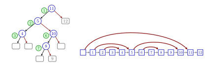

Median-of-k Jumplists and Dangling-Min BSTs
Jumplists are a relatively recent randomized dictionary data structure that can serve as alternative to skip lists.
Like skip lists, they encode a (variant of a) binary search tree in a sorted linked list using additional links that serve as shortcuts to elements further ahead in the list. Unlike skip lists, jumplists use only a single jump pointer per element.

Jumplists were originally suggested by Brönnimann et al. as a randomized data structure where the jump pointers are chosen randomly so that they correspond to a search tree built from a uniformly chosen random permutation of the stored keys. The distribution of jump pointers can be maintained efficiently upon insertions and deletions.
Median-of-k Jumplists
We modify jumplists to choose the pointer targets so that they mimick a $k$-fringe-balanced search tree, i.e., a BST where leafs store up to $k-1$ elements, and upon arrival of the $k$th are split into two new leaves and one internal node with the median of the $k$ elements as key. These trees are known to improve the expected path length, and hence the search costs.
We analyze the costs of search, insert and delete in median-of-$k$ jumplists. We find that larger values of $k$ improve the search costs at the expense of slightly more expensive insertions and deletions.
Analysis-wise, $k$-fringe-balanced trees correspond to moving from classic Quicksort to median-of-$k$ Quicksort, and the same relative savings are observed in both cases. Despite their similarities, different analytical tools are required to analyze median-of-$k$ jumplists.
“Quicksort Data Structures”
The analogy between $k$-fringe-balanced trees and median-of-$k$ Quicksort suggests trying other optimizations of Quicksort on jumplists:
- Multiway partitioning corresponds to adding more than one jump pointer to each node. Elisabeth Neumann investigated the case of two jump pointers in detail in her bachelor’s thesis.
- A cutoff to Insertionsort corresponds to a second node type without jump pointers. For such nodes, we fall back to linear search.
Low Memory Footprint
It turns out that especially this cutoff modification is a very promising idea to reduce the overall amount of memory needed:
By removing the jump pointers from, e.g., all sublists with less than 100 elements, we use less than 1.04 additional words of storage per key without losing much efficiency in searches. A typical implementation of balanced search trees uses much more memory; for example Java’s TreeMap uses 4 (!) additional words per key (left, right, and parent pointers, plus a word-aligned red/black color flag), and does not even store subtree size information needed for rank-based operations.
The practical performance of jumplists is competitive to other dictionary implementations, and they might be unique in directly offering low memory footprint with efficient rank select and worst-case constant-time successor operations.
By grouping elements to blocks, any data structure can be “put on a diet”, i.e., be transformed into one that uses much less extra space without slowing down operations by much. The advantage of jumplists is to avoid the additional layer of abstraction.
Code
I coded a proof-of-concept implementation of median-of-$k$ jumplists as a drop-in replacement of Java’s TreeMap. Here is the github repository.